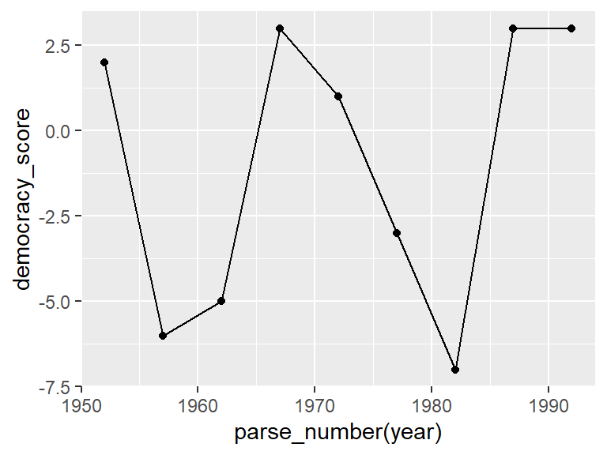
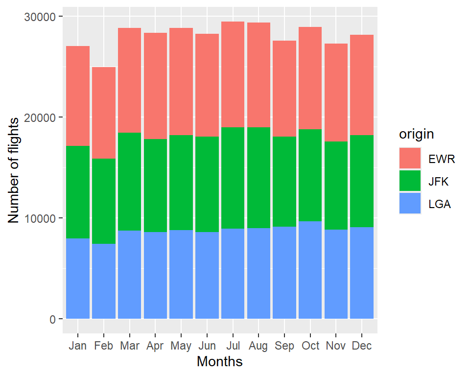

Week 1: Visualising and data tidying using R
1 Getting started 1
This week we will review various techniques for data tidying, wrangling and visualization in R. We’ll revisit key concepts from your previous R programming course and build on them with more advanced methods for data manipulation and plotting.
A lot of the content within this course is based on the open-source book Statistical Inference via Data Science and thus is a useful source for additional examples and questions.
First, start by opening RStudio by going to Desktop -> Maths-Stats -> RStudio. Once RStudio has opened create a new R script by going to File -> New File -> R Script. Next go to File -> Save As... and save the script into your personal drive, either M: or K: (do not save it to the H: drive). We shall now load into R all of the libraries we will need for this session. This can be done by typing the following into your R script:
The libraries can be loaded into R by highlighting them in your script and then clicking on the Run button located in the top right of the script window. The first library ggplot2 allows us to use functions within that package in order to create nice data visualisations. The tidyverse library is actually a collection of different R packages for manipulating data. The final two libraries (nycflights13 and fivethirtyeight) contain interesting data sets that we shall examine in this session.
Notice that when loading the tidyverse package you get a message that tells you about conflicting functions of certain packages. This means that there is at least one or more functions with the same name loaded from different packages (and thus one the function will mask the other).
Using
::after calling the package name every time we use the function from that package. E.g.,dplyr::filter(…)will tell R to explicitly use the functionfilterfrom thedplyrlibrary.Load the
conflictedlibrary and use theconflicts_prefer("function","package")function to explicitly declare which version of the function you want to use in the remaining R session (i.e. afterconflicts_prefer()is called, e.g.,conflict_prefer("filter","dplyr").
2 Viewing the data
Before visualising any data set, we first need to know its contents. For example, the contents of the flights data within the nycflights13 library can be observed using the following command:
Code
glimpse(flights)Rows: 336,776
Columns: 19
$ year <int> 2013, 2013, 2013, 2013, 2013, 2013, 2013, 2013, 2013, 2…
$ month <int> 1, 1, 1, 1, 1, 1, 1, 1, 1, 1, 1, 1, 1, 1, 1, 1, 1, 1, 1…
$ day <int> 1, 1, 1, 1, 1, 1, 1, 1, 1, 1, 1, 1, 1, 1, 1, 1, 1, 1, 1…
$ dep_time <int> 517, 533, 542, 544, 554, 554, 555, 557, 557, 558, 558, …
$ sched_dep_time <int> 515, 529, 540, 545, 600, 558, 600, 600, 600, 600, 600, …
$ dep_delay <dbl> 2, 4, 2, -1, -6, -4, -5, -3, -3, -2, -2, -2, -2, -2, -1…
$ arr_time <int> 830, 850, 923, 1004, 812, 740, 913, 709, 838, 753, 849,…
$ sched_arr_time <int> 819, 830, 850, 1022, 837, 728, 854, 723, 846, 745, 851,…
$ arr_delay <dbl> 11, 20, 33, -18, -25, 12, 19, -14, -8, 8, -2, -3, 7, -1…
$ carrier <chr> "UA", "UA", "AA", "B6", "DL", "UA", "B6", "EV", "B6", "…
$ flight <int> 1545, 1714, 1141, 725, 461, 1696, 507, 5708, 79, 301, 4…
$ tailnum <chr> "N14228", "N24211", "N619AA", "N804JB", "N668DN", "N394…
$ origin <chr> "EWR", "LGA", "JFK", "JFK", "LGA", "EWR", "EWR", "LGA",…
$ dest <chr> "IAH", "IAH", "MIA", "BQN", "ATL", "ORD", "FLL", "IAD",…
$ air_time <dbl> 227, 227, 160, 183, 116, 150, 158, 53, 140, 138, 149, 1…
$ distance <dbl> 1400, 1416, 1089, 1576, 762, 719, 1065, 229, 944, 733, …
$ hour <dbl> 5, 5, 5, 5, 6, 5, 6, 6, 6, 6, 6, 6, 6, 6, 6, 5, 6, 6, 6…
$ minute <dbl> 15, 29, 40, 45, 0, 58, 0, 0, 0, 0, 0, 0, 0, 0, 0, 59, 0…
$ time_hour <dttm> 2013-01-01 05:00:00, 2013-01-01 05:00:00, 2013-01-01 0…This function provides a concise overview of a data frame’s structure. For each column/variable, it displays the name, data type, and a brief preview of the actual values along with dimensions of the data set (i.e, 19 columns and 336776 rows).
Another useful function that can be used to quickly explore your data is the slice() function. It allows you to extract specific rows from a data frame based on their positions.
For example, slice(flights, 1:5) retrieves the first 5 rows of the flights data frame. Additionally, the .by argument in slice() enables grouped slicing (e.g. slice(flights, 1:3, .by = carrier) retrieves the first three rows within each group defined by the carrier variable). This function is useful for obtaining subsets of data for inspection or further analysis while preserving the structure within subgroups.
3 Tidy data
What does it mean for your data to be tidy? Beyond just being organised, having tidy data means that your data follows a standardised format. Tidy data is about structuring your data so that:
Each variable has its own column
Each observation has its own row
Each type of observation forms a table.
This format makes it much easier to perform data analysis and ensures that your data is compatible with many of the tools and packages used in data science.

For example, say the following table consists of stock prices:
| Date | Boeing Stock Price | Amazon Stock Price | Google Stock Price |
|---|---|---|---|
| 2009-01-01 | $173.55 | $174.90 | $174.34 |
| 2009-01-02 | $172.61 | $171.42 | $170.04 |
Although the data are neatly organised in a spreadsheet-type format, they are not in tidy format since there are three variables corresponding to three unique pieces of information (Date, Stock Name, and Stock Price), but there are not three columns. In tidy data format each variable should be its own column, as shown below. Notice that both tables present the same information, but in different formats.
| Date | Stock Name | Stock Price |
|---|---|---|
| 2009-01-01 | Boeing | $173.55 |
| 2009-01-02 | Boeing | $172.61 |
| 2009-01-01 | Amazon | $174.90 |
| 2009-01-02 | Amazon | $171.42 |
| 2009-01-01 | $174.34 | |
| 2009-01-02 | $170.04 |
However, consider the following table:
| Date | Boeing Price | Weather |
|---|---|---|
| 2009-01-01 | $173.55 | Sunny |
| 2009-01-02 | $172.61 | Overcast |
In this case, even though the variable Boeing Price occurs again, the data is tidy since there are three variables corresponding to three unique pieces of information (Date, Boeing stock price, and the weather on that particular day).
The non-tidy data format in the original table is also known as wide format whereas the tidy data format in the second table is also known as long/narrow data format. In this course, we will work mostly with data sets that are already in the tidy format.
4 Converting to tidy data format
In this section, we will see how to convert a data set that is not in the tidy format i.e. wide format, to a data set that is in the tidy format i.e. long/narrow format.
First, let’s download a Comma Separated Values (CSV) file of ratings of the level of democracy in different countries spanning 1952 to 1992: https://moderndive.com/data/dem_score.csv. We use the read_csv() function from the readr package to read it off the web:
Code
dem_score <- read_csv("https://moderndive.com/data/dem_score.csv")Please refer back to your R programming course for an overview of how to import spreadsheets and .csv files into R.
In this dem_score data frame, the minimum value of -10 corresponds to a highly autocratic nation whereas a value of 10 corresponds to a highly democratic nation. Let’s use the dem_score data frame but focus on only data corresponding to the country of Guatemala.
Code
guat_dem <- dplyr::filter(dem_score,country == "Guatemala")
guat_dem# A tibble: 1 × 10
country `1952` `1957` `1962` `1967` `1972` `1977` `1982` `1987` `1992`
<chr> <dbl> <dbl> <dbl> <dbl> <dbl> <dbl> <dbl> <dbl> <dbl>
1 Guatemala 2 -6 -5 3 1 -3 -7 3 3Here we have used the filter function from dplyr package to subset the data set. We will revisit this code for subsetting data later in the session.
In order for this data set to be on a tidy format, we need to take the values of the current column names in guat_dem (aside from country) and convert them into a new variable that will act as a key called year. Then, we’d like to take the numbers on the inside of the table and turn them into a column that will act as values called democracy_score. Our resulting data frame will have three columns: country, year, and democracy_score.
The pivot_longer function in the tidyr package can complete this task for us. The first argument to pivot_longer, is the data argument where we specify which data frame we would like to tidy. The next argument to pivot_longer is cols which specifies which columns we want to pivot into the longer format.
There are helper functions which help us declaring which variable (or variables) we want to pivot !,start_with, last_col, everything, contains, etc. E.g. !country will the tell the function that all the variables except for country should be included in the pivoting process.
The next two arguments names_to and values_to, specify what we would like to call the new columns that convert our wide data into tidy/long format.
Code
guat_dem_long = pivot_longer(guat_dem,cols = !country,
names_to = "year",
values_to = "democracy_score")
slice(guat_dem_long,1:5)# A tibble: 5 × 3
country year democracy_score
<chr> <chr> <dbl>
1 Guatemala 1952 2
2 Guatemala 1957 -6
3 Guatemala 1962 -5
4 Guatemala 1967 3
5 Guatemala 1972 1The inverse transformation of pivot_longer() is of course, pivot_wider() and allows us to pivot from a long to a wide format. As arguments we need to provide which column (or columns) to get the name of the output column (names_from), and which column (or columns) to get the cell values from (values_from). For instance, if want the data from the previous example to go back to a wide-format, we can use the following code:
guat_dem_wide = pivot_wider(guat_dem_long,
names_from = year,
values_from = democracy_score)
guat_dem_wide# A tibble: 1 × 10
country `1952` `1957` `1962` `1967` `1972` `1977` `1982` `1987` `1992`
<chr> <dbl> <dbl> <dbl> <dbl> <dbl> <dbl> <dbl> <dbl> <dbl>
1 Guatemala 2 -6 -5 3 1 -3 -7 3 35 Reminder of ggplot
Now that we have our data on a tidy format we can use ggplot2 to produce a plot showing how the democracy scores have changed over the 40 years from 1952 to 1992 for Guatemala. Lets have a reminder of how we can do this using the ggplot.
First, we need to pass our data to the ggplot() function and then add layers that can combines data, aesthetic mapping, a geom (geometric object), a stat (statistical transformation), and a position adjustment.
Let’s start by laying out how we would map our aesthetics to variables in the data frame:
- The
dataframe isguat_dem_longso we usedata = guat_dem_long. - The mapping of the coordinates for the axes using
aes(x = year, y = democracy_score), whereaes()relates to the plots aesthetics. That is,-
yearmaps to thexcoordinate. -
democracy_scoremaps to theycoordinate.
-
Now we need to add an additional layer using the + command. Lets include a points layer first:
Code
ggplot(data = guat_dem_long, mapping =aes(x = year, y = democracy_score)) +
geom_point()
When adding layers using ggplot it should be noted that:
- the
+command should come at the end of lines, otherwise R will produce an error. - when adding additional layers it is a good idea to take a new line after each
+command. This is so your code will be nice and clear with each layer given its own line of code. This is handy for code debugging.
Now we add a line connecting each point:
Code
ggplot(data = guat_dem_long, mapping =aes(x = year, y = democracy_score)) +
geom_point()+
geom_line()`geom_line()`: Each group consists of only one observation.
ℹ Do you need to adjust the group aesthetic?
What happened? Note that the year variable in guat_dem_long is stored as a character vector since we had to circumvent the naming rules in R by adding backticks around the different year columns in guat_dem_long. This is leading to ggplot not knowing exactly how to plot a line using a categorical variable. We can fix this by using the parse_number function in the readr package:
Code
ggplot(data = guat_dem_long, mapping = aes(x = parse_number(year), y = democracy_score)) +
geom_point()+
geom_line()
We’ll see later how we could use the mutate function to change year to be a numeric variable during the tidying process (alternatively we could have added the argument names_transform = list(year = as.integer) in the pivot_longer() function to declare the year column values as an integers; see ?pivot_longer for more details).
As a final step we can change the axes labels and include a title on our plot by adding another layer as follows:
Code
ggplot(data = guat_dem_long, mapping = aes(x = parse_number(year), y = democracy_score)) +
geom_point()+
geom_line()+
labs(x = "year", y = "Democracy score",
title = "Guatemala's democracy score ratings from 1952 to 1992")
6 Data wrangling
We are now able to import data and perform basic operations on the data to get it into the tidy format. In this and subsequent sections we will use tools from the dplyr package (included in tidyverse) to perform data wrangling which includes transforming, mapping and summarising variables.
6.1 The pipe %>%
Before we dig into data wrangling, let’s first introduce the pipe operator (%>%). Just as the + sign was used to add layers to a plot created using ggplot, the pipe operator allows us to chain together data wrangling functions. The pipe operator can be read as then.
The piping syntax will be our major focus throughout the rest of this course and you’ll find that you’ll quickly be addicted to the chaining with some practice.
6.2 Data wrangling verbs
The d in dplyr stands for data frames, so the functions in dplyr are built for working with objects of the data frame type. In your previous R programming course you have already covered some of the most commonly used functions/verbs for wrangling and summarising data (i.e. filter, summarise and group_by). Thus, on this session we won’t review these deeply (for more details of how these verbs work please refer back to your R programming course) but rather we will introduce new verbs that you might not have seen before. Here is a description of some of these verbs:
select: Select variables in a data framefilter: Pick rows based on conditions about their valuessummarize: Compute summary measures known as “summary statistics” of variablesgroup_by: Group rows of observations togethermutate: Create a new variable in the data frame by mutating existing onesjoin: Join/merge two data frames by matching along a “key” variable. There are many differentjoinavailable. Here, we will focus on theinner_joinfunction.
All of the verbs are used similarly where you: take a data frame, pipe it using the %>% syntax into one of the verbs above followed by other arguments specifying which criteria you would like the verb to work with in parentheses.
6.3 Select and rename columns

We’ve seen that the flights data frame in the nycflights13 package contains many different variables. The names function gives a listing of all the columns in a data frame; in our case you would run names(flights). However, say you only want to consider two of these variables, carrier and flight. You can select these as follows:
| carrier | flight |
|---|---|
| UA | 1545 |
| UA | 1714 |
| AA | 1141 |
| B6 | 725 |
| DL | 461 |
The select function allows a subset of columns to be extracted, making navigation data sets with a very large number of variables easier.
Reversely, one can exclude specific columns via negative selection (using -). For instance, in the flights data set, the year variable isn’t really a variable here in that it doesn’t vary (the flights data set actually comes from a larger data set that covers many years). Thus, we may want to remove the year variable from our data set since it won’t be helpful for analysis in this case. We can deselect year by using the - sign:
The select function can also be used to reorder columns in combination with the everything helper function. Let’s suppose we would like the hour, minute, and time_hour variables, which appear at the end of the flights data set, to actually appear immediately after the day variable:
Code
flights_reorder <- flights %>%
select(month:day, hour:time_hour, everything())
names(flights_reorder) [1] "month" "day" "hour" "minute"
[5] "time_hour" "year" "dep_time" "sched_dep_time"
[9] "dep_delay" "arr_time" "sched_arr_time" "arr_delay"
[13] "carrier" "flight" "tailnum" "origin"
[17] "dest" "air_time" "distance" in this case everything() picks up all remaining variables.
Alternatively we could use the relocate() verb to change column positions, using the same syntax as select() to make it easy to move blocks of columns at once. We will see an example of this in the next section.
Lastly, the helper functions starts_with, ends_with, and contains can be used to choose variables / column names that match those conditions.
Finally, if we want to rename a column while preserving the other columns we can use the rename function. Suppose we wanted dep_time and arr_time to be departure_time and arrival_time instead in the flights_time data frame:
Code
[1] "departure_time" "sched_dep_time" "arrival_time" "sched_arr_time"
[5] "air_time" "time_hour" Note that in this case we used a single = sign with rename. e.g,. departure_time = dep_time. This is because we are not testing for equality like we would using ==, but instead we want to assign a new variable departure_time to have the same values as dep_time and then delete the variable dep_time.
6.4 Filter observations using filter

The filter function allows you to specify criteria about values of a variable in your data set and then chooses only those rows that match that criteria.
Recall that the base R has already a filter function defined. So make sure to avoid any conflicts either by calling dplyr::filter() every time you use the function (specially if you have loaded the conflicts library) or alternatively run theconflict_prefer() function to let R know that it should use dplyr’s filter function as default.
Code
conflict_prefer("filter", "dplyr")[conflicted] Will prefer dplyr::filter over any other package.Since you have already covered this in your R programming course, let’s begin straight away by focusing only at Alaska Airlines flights leaving from New York City in 2013. We can combine the data wrangling output with ggplot plotting techniques. Run the following code and look at the resulting scatterplot.
Code

Here is an explanation of what we’ve just did:
- Take the data frame
flightsthen -
filterthe data frame so that only those where thecarrierequalsASare included. (recall that the double equals sign==tests equality, and not a single equals sign=). - pass the filtered data to the ggplot function and add a point layer and then modify axis labels.
You can combine multiple criteria together using operators that make comparisons:
-
|corresponds to or -
&corresponds to and
We can often skip the use of & and just separate our conditions with a comma. You’ll see this in the example below.
In addition, you can use other mathematical checks (similar to ==):
>corresponds to greater than<corresponds to less than>=corresponds to greater than or equal to<=corresponds to less than or equal to!=corresponds to not equal to
To see many of these in action, let’s select all flights that left JFK airport heading to Burlington, Vermont (BTV) or Seattle, Washington (SEA) in the months of October, November, or December. Run the following:
| year | month | day | dest | dep_time | sched_dep_time | dep_delay | arr_time | sched_arr_time | arr_delay | carrier | flight | tailnum | origin | air_time | distance | hour | minute | time_hour |
|---|---|---|---|---|---|---|---|---|---|---|---|---|---|---|---|---|---|---|
| 2013 | 10 | 1 | SEA | 729 | 735 | -6 | 1049 | 1040 | 9 | DL | 183 | N721TW | JFK | 352 | 2422 | 7 | 35 | 2013-10-01 07:00:00 |
| 2013 | 10 | 1 | SEA | 853 | 900 | -7 | 1217 | 1157 | 20 | B6 | 63 | N807JB | JFK | 362 | 2422 | 9 | 0 | 2013-10-01 09:00:00 |
| 2013 | 10 | 1 | BTV | 916 | 925 | -9 | 1016 | 1033 | -17 | B6 | 1634 | N192JB | JFK | 48 | 266 | 9 | 25 | 2013-10-01 09:00:00 |
Even though colloquially speaking one might say “all flights leaving Burlington, Vermont and Seattle, Washington,” in terms of computer logical operations, we really mean “all flights leaving Burlington, Vermont or Seattle, Washington.” For a given row in the data, dest can be BTV, SEA, or something else, but not BTV and SEA at the same time. Also note that we have used the relocate function to change the dest column position to just before the dep_time. See ?relocate for further details.
Another example uses ! to pick rows that do not match a condition. The ! can be read as not. Here, we are selecting rows corresponding to flights that did not go to Burlington, VT or Seattle, WA.
Code
# A tibble: 3 × 19
year month day dest dep_time sched_dep_time dep_delay arr_time
<int> <int> <int> <chr> <int> <int> <dbl> <int>
1 2013 1 1 IAH 517 515 2 830
2 2013 1 1 IAH 533 529 4 850
3 2013 1 1 MIA 542 540 2 923
# ℹ 11 more variables: sched_arr_time <int>, arr_delay <dbl>, carrier <chr>,
# flight <int>, tailnum <chr>, origin <chr>, air_time <dbl>, distance <dbl>,
# hour <dbl>, minute <dbl>, time_hour <dttm>As a final note we point out that filter should often be the first verb you’ll apply to your data. This narrows down the data to just the observations your are interested in.
6.5 Create new variables/change old variables using mutate

When looking at the flights data set, there are some clear additional variables that could be calculated based on the values of variables already in the data set. Passengers are often frustrated when their flights depart late, but change their mood a bit if pilots can make up some time during the flight to get them to their destination close to when they expected to land. This is commonly referred to as “gain” and we will create this variable using the mutate function. Note that we will be overwriting the flights data frame with one including the additional variable gain here, or put differently, the mutate command outputs a new data frame which then gets saved over the original flights data frame.
Let’s take a look at dep_delay, arr_delay, and the resulting gain variables in our new flights data frame:
| dep_delay | arr_delay | gain |
|---|---|---|
| 2 | 11 | -9 |
| 4 | 20 | -16 |
| 2 | 33 | -31 |
| -1 | -18 | 17 |
| -6 | -25 | 19 |
The flight in the first row departed 2 minutes late but arrived 11 minutes late, so its “gained time in the air” is actually a loss of 9 minutes, hence its gain is -9. Contrast this to the flight in the fourth row which departed a minute early (dep_delay of -1) but arrived 18 minutes early (arr_delay of -18), so its “gained time in the air” is 17 minutes, hence its gain is +17.
Let’s look at visualize this gain variable in the form of a histogram:
Code
ggplot(data = flights, mapping = aes(x = gain)) +
geom_histogram(color = "white", bins = 20)
We can also create multiple columns at once and even refer to columns that were just created in a new column.
| gain | hours | gain_per_hour |
|---|---|---|
| -9 | 3.783333 | -2.378855 |
| -16 | 3.783333 | -4.229075 |
| -31 | 2.666667 | -11.625000 |
| 17 | 3.050000 | 5.573771 |
| 19 | 1.933333 | 9.827586 |
6.6 Summarise variables using summarize
The next common task is to be able to summarise data: take a large number of values and summarise them with a single value. While this may seem like a very abstract idea, something as simple as the sum, the smallest value, and the largest values are all summaries of a large number of values.

We can calculate the standard deviation and mean of the temperature variable temp in the weather data frame of nycflights13 in one step using the summarize (or equivalently using the UK spelling summarise) function in dplyr. Before compute the mean it is important to notice that there are some missing values in the data. Thus, by default any time you try to summarise a number of values (using mean() and sd() for example) that has one or more missing values, an NA will be returned.
You can summarise all non-missing values by setting the na.rm argument to TRUE (rm is short for remove). This will remove any NA missing values and only return the summary value for all non-missing values. So the code below computes the mean and standard deviation of all non-missing values. Notice how the na.rm=TRUE are set as arguments to the mean and sd functions, and not to the summarize function.
Code
# A tibble: 1 × 2
mean std_dev
<dbl> <dbl>
1 55.3 17.8It is not good practice to include na.rm = TRUE in your summary commands by default; you should attempt to run code first without this argument as this will alert you to the presence of missing data. Only after you have identified where missing values occur and have thought about the potential issues of these should you consider using na.rm = TRUE.
6.7 Using grouping structures

It is often more useful to summarise a variable based on the groupings of another variable. Let’s say we are interested in the mean and standard deviation of temperatures but grouped by month. Run the following code:
This code is identical to the previous code that created summary_temp, with an extra .by = month added. This kind per-operation grouping allow us to do the grouping within the operation where the summarisation takes place without changing the structure of the data .
We now revisit the n counting summary function (see the R programming course for more details). For example, suppose we would like to get a sense for how many flights departed from each of the three airports in New York City:
| origin | count |
|---|---|
| EWR | 120835 |
| JFK | 111279 |
| LGA | 104662 |
We see that Newark (EWR) had the most flights departing in 2013 followed by JFK and lastly by LaGuardia (LGA). Note, there is a subtle but important difference between sum and n. While sum simply adds up a large set of numbers, the latter counts the number of times each of many different values occur.
6.8 Grouping by more than one variable
You are not limited to grouping by one variable. Say you wanted to know the number of flights leaving each of the three New York City airports for each month, we can also group by a second variable month:
Code
# A tibble: 36 × 3
origin month count
<chr> <int> <int>
1 EWR 1 9893
2 LGA 1 7950
3 JFK 1 9161
4 EWR 10 10104
5 JFK 10 9143
6 LGA 10 9642
7 JFK 11 8710
8 EWR 11 9707
9 LGA 11 8851
10 JFK 12 9146
# ℹ 26 more rowsWe see there are 36 rows for by_origin_monthly because there are 12 months times 3 airports (EWR, JFK, and LGA). How can we visualize this information? Lets look now into different techniques for manipulation and visualizing categorical data.
7 Working with categorical data
7.1 Visualizing categorical data
Recall that barplots, or barcharts, are used to visualise the distributions of categorical variables. This essentially provides us with the frequencies of categories within a categorical variable. You can use either the raw data (e.g. the original flights data set) or the summarised data set (e.g. the by_origin_monthly data set we just created) to create barplots in ggplot.
Here we can use a data set with variable(s) representing the categories. We can add a geom_bar() layer to create a barplot layer by counting the number of cases for each level of a categorical variable and use the fill=origin option to assign a different color to the counts based on the origin.
flights %>%
ggplot(aes(x=factor(month),fill=origin))+
geom_bar()+
scale_x_discrete(labels = month.abb) +
labs(x= "Months",y="Number of flights")
Note that the month variable in our data set is an integer. Thus, we convert this into a factor using the factor() function directly in the aesthetic mapping. Then we provide appropriate labels for each month (labels = month.abb) by adding one more scale_x_discretelayer.
Here we can use a data set with variables representing the categories and the counts of each category (e.g. the by_origin_monthly data set we just created). To produce the bar plot we add a geom_col() layer which expects a data set that already contains the counts for each group. We use the fill=origin option to assign a different color to the counts based on the origin.
by_origin_monthly %>%
ggplot(aes(x = factor(month), y = count, fill= origin )) +
geom_col() +
scale_x_discrete(labels = month.abb)+
labs(x= "Months",y="Number of flights")
Note that the month variable in our data set is an integer. Thus, we convert this into a factor using the factor() function directly in the aesthetic mapping. Then we provide appropriate labels for each month (labels = month.abb) by adding one more scale_x_discretelayer.
This is what is referred to as a Stacked barplot since the bars for each origin are simply stacked on top of one another for each of the carriers. This provides us with a visually nice barplot to present the monthly number of flights by airport of origin. However, there are also alternative barplots to the stacked barplot.
- One alternative to a stacked barplot is the side-by-side (or dodged) barplot, which, as suggested by its name, places the bars next to each other instead of on top of one another. This can be produced by including
position = 'dodge'within thegeom_colorgeom_barlayer.
- A second alternative is to use a faceted barplot. This can be produced by adding a
facet_wrap()layer to ggplot. E.g. try addingfacet_wrap(~ origin, ncol = 1)to any of the previous barplots you have produced. Thefacet_wrapfunction tells ggplot that we want to separate out barplots byorigin, and hence we use~ origin.
By using the summarise() function, how could we identify how many flights left each of the three airports for each carrier? Can you create a barplot showing these results?
You can count how many flights left each of the three airports by summarising the data using the n() function while grouping by the origin and carrier. Then, you can pass the resulting data frame to ggplot using the pipeline command %>% and use a geom_col layer as in the previous example.

7.2 Vectorised if-else thru case_when
In many situations, we may want to represent continuous variables as discrete categories (e.g., grouping temperatures into “cold,” “warm,” and “hot” ranges). The case_when function provides an efficient way to handle multiple if-else statements by vectorizing them, allowing us to evaluate conditions and assign categories more cleanly and concisely. In this session, we will use case_when to categorize weather conditions based on meteorological data from the weather dataset. Let suppose that we want to categorize the temperature variable into three categories:
low for temperatures \(<39.9\)
medium for temperature values \(\geq 39.9\) and \(\leq 70\)
high for temperature values \(> 70\)
We can achieve this with the following code:
Code
| temp | temp_cat | origin | year | month | day | hour | dewp | humid | wind_dir | wind_speed | wind_gust | precip | pressure | visib | time_hour |
|---|---|---|---|---|---|---|---|---|---|---|---|---|---|---|---|
| 39.02 | low | EWR | 2013 | 1 | 1 | 1 | 26.06 | 59.37 | 270 | 10.35702 | NA | 0 | 1012.0 | 10 | 2013-01-01 01:00:00 |
| 39.02 | low | EWR | 2013 | 1 | 1 | 2 | 26.96 | 61.63 | 250 | 8.05546 | NA | 0 | 1012.3 | 10 | 2013-01-01 02:00:00 |
| 39.02 | low | EWR | 2013 | 1 | 1 | 3 | 28.04 | 64.43 | 240 | 11.50780 | NA | 0 | 1012.5 | 10 | 2013-01-01 03:00:00 |
| 39.92 | medium | EWR | 2013 | 1 | 1 | 4 | 28.04 | 62.21 | 250 | 12.65858 | NA | 0 | 1012.2 | 10 | 2013-01-01 04:00:00 |
| 39.02 | low | EWR | 2013 | 1 | 1 | 5 | 28.04 | 64.43 | 260 | 12.65858 | NA | 0 | 1011.9 | 10 | 2013-01-01 05:00:00 |
Here we use the mutate command to create new variable named temp_cat. The case_when will then set to NA those values in the original temp variable that are missing. Then if the values of temp are \(< 30.9\) it will assign them the label of low. If they lie between \(39.9\) and \(70\) it will assign them the label of medium and finally set to large any of the values that do not meet any of the aforementioned conditions. We can also use the function relocate to change the columns position so that the temp and temp_cat appears first on the data frame.
8 Joining data frames
Another common task is joining (merging) two different data sets. For example, in the flights data, the variable carrier lists the carrier code for the different flights. While UA and AA might be somewhat easy to guess for some (United and American Airlines), what are VX, HA, and B6? This information is provided in a separate data frame airlines.
airlines| carrier | name |
|---|---|
| 9E | Endeavor Air Inc. |
| AA | American Airlines Inc. |
| AS | Alaska Airlines Inc. |
| B6 | JetBlue Airways |
| DL | Delta Air Lines Inc. |
We see that in airports, carrier is the carrier code while name is the full name of the airline. Using this table, we can map the carrier in the flights data set to its corresponding full name stored in the airlines data. However, will we have to continually look up the carrier’s name for each flight in the airlines data set?
No! Instead of having to do this manually, we can have R automatically do the “looking up” for us.
Note that the values in the variable carrier in flights match the values in the variable carrier in airlines. In this case, we can use the variable carrier as a key variable to join/merge/match the two data frames by. Key variables are almost always identification variables that uniquely identify the observational units. This ensures that rows in both data frames are appropriately matched during the join. This diagram helps us understand how the different data sets are linked by various key variables:

8.1 Joining by “key” variables
In both flights and airlines, the key variable we want to join/merge/match the two data frames with has the same name in both data sets: carriers. We make use of the inner_join function to join by the variable carrier.
Code
flights_joined <- flights %>%
inner_join(airlines,
by = join_by(carrier))If we compare the flights and the flights_joined we just created, we will observe that these are identical except that flights_joined has an additional variable name whose values were drawn from airlines.
A visual representation of the inner_join is given below:

There are more complex joins available, but the inner_join will solve nearly all of the problems you will face here.
8.2 Joining by “key” variables with different names
Say instead, you are interested in all the destinations of flights from NYC in 2013 and ask yourself:
- “What cities are these airports in?”
- “Is
ORDOrlando?” - “Where is
FLL?”
The airports data frame contains airport codes:
airports| faa | name | lat | lon | alt | tz | dst | tzone |
|---|---|---|---|---|---|---|---|
| 04G | Lansdowne Airport | 41.13047 | -80.61958 | 1044 | -5 | A | America/New_York |
| 06A | Moton Field Municipal Airport | 32.46057 | -85.68003 | 264 | -6 | A | America/Chicago |
| 06C | Schaumburg Regional | 41.98934 | -88.10124 | 801 | -6 | A | America/Chicago |
| 06N | Randall Airport | 41.43191 | -74.39156 | 523 | -5 | A | America/New_York |
| 09J | Jekyll Island Airport | 31.07447 | -81.42778 | 11 | -5 | A | America/New_York |
However, looking at both the airports and flights and the visual representation of the relations between the data frames in the figure above, we see that in:
-
airportsthe airport code is in the variablefaa -
flightsthe airport code is in the variableorigin
So to join these two data sets, our inner_join operation involves a logical operator == argument that accounts for the different names.
Code
flights %>%
inner_join(airports,
by = join_by(dest == faa))We can read the code out loud as:
“Take the flights data frame and inner join it to the airports data frame by the entries where the variable dest is equal to faa”
Let’s construct the sequence of commands that computes the number of flights from NYC to each destination, but also includes information about each destination airport:
# A tibble: 5 × 9
dest num_flights airport_name lat lon alt tz dst tzone
<chr> <int> <chr> <dbl> <dbl> <dbl> <dbl> <chr> <chr>
1 ORD 17283 Chicago Ohare Intl 42.0 -87.9 668 -6 A Amer…
2 ATL 17215 Hartsfield Jackson Atl… 33.6 -84.4 1026 -5 A Amer…
3 LAX 16174 Los Angeles Intl 33.9 -118. 126 -8 A Amer…
4 BOS 15508 General Edward Lawrenc… 42.4 -71.0 19 -5 A Amer…
5 MCO 14082 Orlando Intl 28.4 -81.3 96 -5 A Amer…In case you didn’t know, ORD is the airport code of Chicago O’Hare airport and FLL is the main airport in Fort Lauderdale, Florida, which we can now see in our named_dests data frame.
8.3 Joining by multiple “key” variables
Say instead we are in a situation where we need to join by multiple variables. For example, in the first figure in this section we see that in order to join the flights and weather data frames, we need more than one key variable: year, month, day, hour, and origin. This is because the combination of these 5 variables act to uniquely identify each observational unit in the weather data frame: hourly weather recordings at each of the 3 NYC airports.
We achieve this by specifying a vector of key variables to join by.
Code
flights_weather_joined <- flights %>%
inner_join(weather,
by = join_by(year,month,day,hour,origin))
flights_weather_joined# A tibble: 335,220 × 32
year month day dep_time sched_dep_time dep_delay arr_time sched_arr_time
<int> <int> <int> <int> <int> <dbl> <int> <int>
1 2013 1 1 517 515 2 830 819
2 2013 1 1 533 529 4 850 830
3 2013 1 1 542 540 2 923 850
4 2013 1 1 544 545 -1 1004 1022
5 2013 1 1 554 600 -6 812 837
6 2013 1 1 554 558 -4 740 728
7 2013 1 1 555 600 -5 913 854
8 2013 1 1 557 600 -3 709 723
9 2013 1 1 557 600 -3 838 846
10 2013 1 1 558 600 -2 753 745
# ℹ 335,210 more rows
# ℹ 24 more variables: arr_delay <dbl>, carrier <chr>, flight <int>,
# tailnum <chr>, origin <chr>, dest <chr>, air_time <dbl>, distance <dbl>,
# hour <dbl>, minute <dbl>, time_hour.x <dttm>, gain <dbl>, hours <dbl>,
# gain_per_hour <dbl>, temp <dbl>, dewp <dbl>, humid <dbl>, wind_dir <dbl>,
# wind_speed <dbl>, wind_gust <dbl>, precip <dbl>, pressure <dbl>,
# visib <dbl>, time_hour.y <dttm>The end?
Congratulations! You have reached the end of today’s session. But wait, there’s still more! To further enhance your skills in Data analysis, check out the additional material provided on handling date-time data. This will help you learn how to manage and manipulate date-time variables within the framework of tidy data, enabling you to perform more precise and effective analyses.